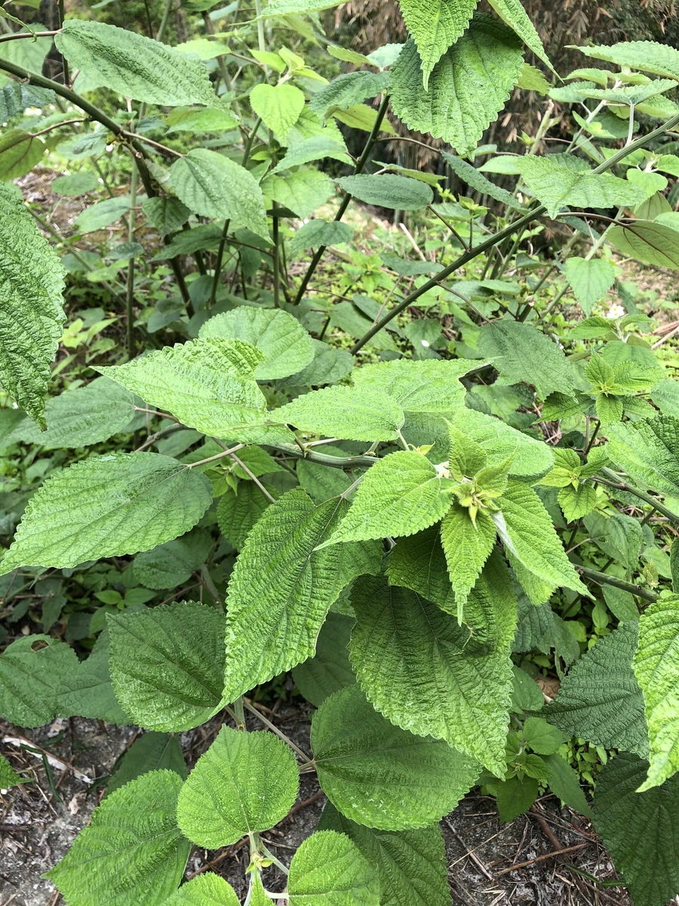

农作物与经济植物 · 植物界
苎麻 Boehmeria nivea

苎麻的茎皮纤维洁白坚韧、耐腐防霉，是优质的纺织原料，有“中国草”之誉，栽培历史已逾四千年。
- 分类
- 门被子植物门纲双子叶植物纲目蔷薇目科荨麻科属苎麻属
- 栖息环境
- 亚热带温暖湿润的丘陵与平原，耐旱耐瘠薄
- 地理分布
- 原产中国，现主产于中国湖南、湖北、江西、四川等地
- 保护级别
- 暂无评估（栽培作物）
物种志
苎麻是荨麻科多年生亚灌木状草本，株高 1–2.5 m，茎直立，丛生，表面有短毛。叶片卵形或近圆形，边缘有粗锯齿，表面粗糙，背面密生白色茸毛，叶柄长。花单性同株，穗状花序，雌花序在上、雄花序在下。茎皮纤维洁白、有光泽。
苎麻原产中国，栽培历史已有 4000 多年，是中国重要的纤维作物，被称为“中国草”。它喜温暖湿润气候，耐旱、耐瘠薄，适宜在土层深厚的壤土中种植，多用分蔸、扦插或种子繁殖。苎麻纤维洁白、坚韧、耐腐、防霉，可织成夏布、帆布、麻线和高级衣料，与棉、毛、丝混纺也很有优势；根、叶可入药，有止血、清热之效。中国湖南、湖北、江西、四川等地是苎麻主产区。
形态与习性
- 株高1–2.5 m，茎丛生
- 叶卵形，背面密生白色茸毛
- 花单性同株，穗状花序
- 纤维洁白坚韧，耐腐防霉
- 用途夏布、帆布、麻线与混纺衣料
- 别名中国草
趣味知识
- 苎麻纤维洁白坚韧，中国用它织夏布已有数千年历史。
- 苎麻被称为“中国草”，是中国传统的纤维作物。
- 苎麻的根和叶还可入药，有止血、清热的作用。